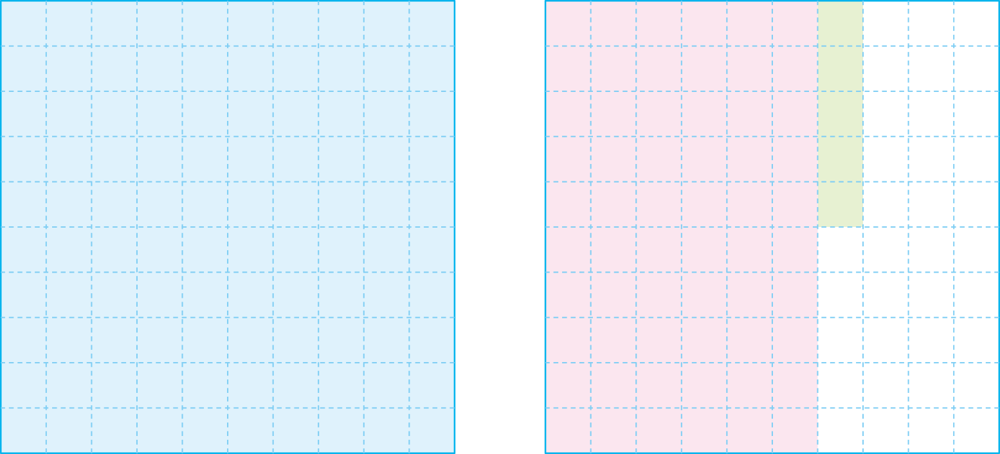

-
-
분수1는 소수로
- 65
- 100
라 쓰고,1.65라고 읽습니다.일 점 육오 -

-
-
일의 자리 소수 첫째 자리 소수 둘째 자리 1 . 0 . 6 0 . 0 5 1 . 6 5 -
1.65에서 1은 일의 자리 숫자이고, 1을 나타냅니다.
6은 소수 첫째 자리 숫자이고, 0.6을 나타냅니다.
5는 소수 둘째 자리 숫자이고, 0.05를 나타냅니다. -
1.65는 1이 1개, 0.1이 6개, 0.01이 5개인 수입니다.
-